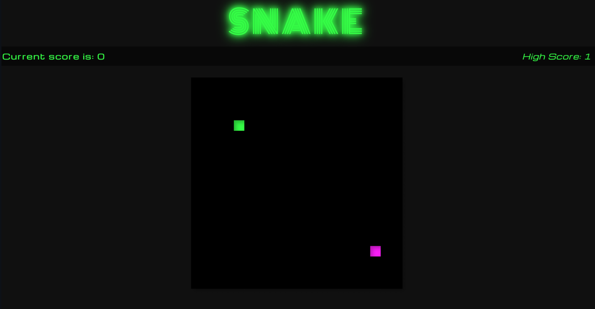

Snake Game


This was the first project I completed. My aim was to recreate the classical game snake with a more modern twist.
Fitness Enthusiast | Korean Post-Apocalyptic Movie Binger | Anime Nerd
Hi there! I'm passionate about technology and love unraveling the intricacies of how things work. I'm dedicated to delivering work of the highest quality.
In my previous role as a teacher, I honed valuable skills in problem-solving, critical thinking, and effective communication. My inquisitive nature led me to delve into the world of web development, where I not only watched tutorials on building websites but actively embraced coding through resources like Free Code Camp. This journey culminated in a 3-month intensive boot camp, where I translated my creativity into four impressive projects.
Check out my projects below and let's connect!
This was the first project I completed. My aim was to recreate the classical game snake with a more modern twist.

Owing to my dedication and love for the long-running anime One Piece, my second project, the One Piece Orchard, acts as an online library for One Piece enthusiasts like myself to keep track of all the 'Devil Fruits' that have appeared throughout the series, keep track of the users of that fruit, and learn more about it.


Following my love of fitness, I created Fitnomenal alongside two team members. The app is built for people interested in getting fit but don't know where to start, using a workout generator API to randomly generate a daily workout for the user. The app also tracks the user's progress in relation to the goals they set for themselves to keep them motivated. Check out the app (insert deployment link). Wanna see the code? (insert Readme link)
Gum Gum was inspired by the self-improvement ideology of James Clear's Atomic Habit. It allows the user to set goals and create micro-habits to achieve them. It also visualizes the completion of the daily habit so the user can see their progress. Check out the app (insert deployment link). Wanna see the code? (insert Readme link)